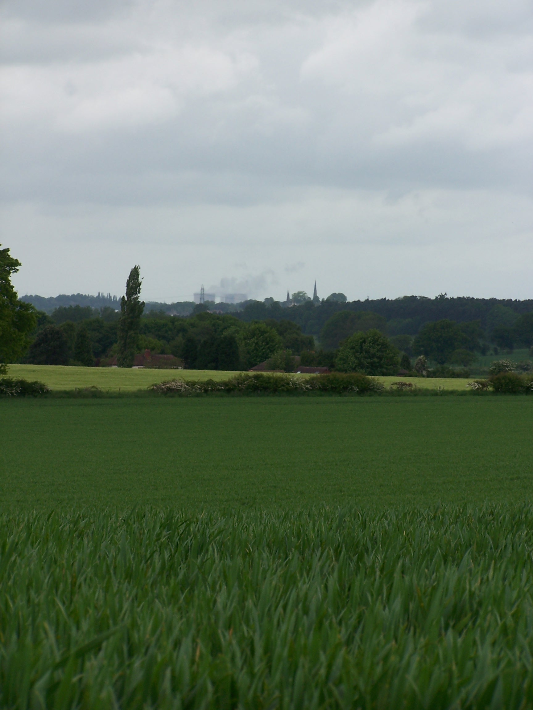

Heart of England and Costwold Ways to Bath
Friday 22nd May Cannock Chase to Kingsbury
Field and road walking on Heart of England Way
21 miles approx
Well
I was really into the southern section now. The campsite was noisy in
the morning with hundreds of loud birds giving it their all. This is what
you get when your campsite is in the middle of a forest.
I was packed up and away by 8am and was heading up into the Beaudesert Old Park.
I took a detour into Castle Ring fort. This is a large bronze
age fort that is built on the edge of high ground overlooking a
huge open
expance of the midlands below. I walked along the earthwork banks
before heading out
into Cannock Wood village and on along the road to Gentleshaw. The way
now headed through Gentleshaw common where there
are good views
over Burntwood and out across the midlands. I managed to take a
wrong
path at the outset but was able to get back on track. The common
is riddled with
paths crisscrossing each other heading in all directions. There are no
waysigns either. I exited onto and stayed on back roads to
Creswell Green and on into Lichfield. Lichfield town centre came
as a bit of a shock, one minute I was ambling down country lanes,
then the next there were lots of people, traffic everywhere, noise, noisy noise. However I
needed some supplies and Lichfield offers some good sights and shopping. There is the Cathedral,
some nice churches, and an old house called Molly's Hospital to see. I got a little off
route as the Heart Of England Way signing wasn't at all obvious through the streets. I did manage to
get out of the centre and after walking though some housing estates I was out on
the busy A51 leaving town. I now noticed a bronze plate in the pavement for
the HofE Way. A bit late.
A
little further down the A road, the HofE Way takes a very
straight and wide bridal way heading somewhat parallel to the
road. It made for easy and fast walking. At Blackhead farm I found
myself crossing a busy dual carriage way over a high footbridge. The A5
was new
and didn't show on the map in the guide book. I then came to a gate
with a
sign 'PRIVATE - DOGS LOOSE'. This is the Heart of England Way, and a
right of way. This is typical of England, you don't get
signs like these in Scotland. There was a bull terrier in the drive but
it just sat watching me walk by and I was soon into the fields again.
These field
paths seemed quite
well trod compared to the earlier Limestone and Staffordshire Ways. I
followed the clear path to the corner of the field where I had to weave my way
through a large herd of cows and a couple of bulls. As I closed the
gate the cows were left mooing madly because they thought that I was going
to let them through with me. It was here when I realised that the well troden path that I had followed was that
way due to the cows and that by following it I had gone to the wrong corner of the field. Luckily I was able
to head up the hill on this side of the fence and rejoin the path which wasn't as well trod. After Brockhurst Farm I turned
into a field where the path had been ploughed out all together and crops of mustard
blocked my way. I followed the edge of the field and in doing so, found a strange
trap with a Raven stuck in it. The trap was a wire cage with a couple of
trap doors and half a rabbit in it offered as bait. I opened the cage and let
the bird out. I then closed all the trap doors so that nothing else
would go in to it. What the hell were they tring to trap? Further on I
arrived at the busy A453 where the Way now followed a little back road to
Drayton Basset. This was a busy little rat run back road and the book suggests that
the Way could be diverted in the future. On the road I came
across a German guy walking the other way. He told me that he was
walking to
John O'Groats from Dover. His English wasn't great so I wished him luck and pressed on. Drayton
Basset claims to be the best kept village in England. When I arrived it
seemed to have too many modern buildings and I'm not sure it looked any
better kept than other villages I'd been through. I read that the old
buildings
didn't have front doors. This was intended to stop the villagers from
talking in the
street. In addition and for the same reason there was no pub. This was
by order of the Lord of
the Manor at the time, Robert Peel (the farther of the Robert Peel who
started the
police force) who built the village. As I walked through I couldn't see any houses with no front
door, Perhaps they were hidden by the new houses. The map shows a Post
Office but I couldn't locate it. I asked a guy walking towards me where it was to be told that
it had closed last year.
Modern villages have lost their charm in many ways and the loss of the
village
store and postoffice is one. Just outside the village after risking my
life walking along the busy single track road I joined the
Birmingham and Fazeley Canal. I came to
the foot bridge which has turrets and spiral staircases to get you
over. Pitty the turrets were daubed with graffiti. Best kept
village my ar**. Now I followed a long
straight towpath all the way to Kingsbury Water Park. The campsite
there was busy
with Kids running about so I decided to call the White Swan in town and
book a room. It was room only with a seperate bathroom, but for £17 it
was a bargain. Kingsbury seems to have a problem with yob kids. They
were hanging around the pub being noisy but it didn't bother me too
much. This is why the lovely old church is locked up. Had a bath and
dinner in the Chinese restaurant attached to the pub. It was basic but
nice enough. I watched a bit of TV and hit the hay.
Saturday 23rd May Kingsbury to Meriden
Field and road walking on Heart of England Way
21 miles approx
I woke with
the light through the thin curtains on the very big window in my room.
It was just 6am. Someone else was up and about outside my room. They
had put the washing machine on. Hmmm. I got up and had a shower at
7:30am. There was a cleaning lady
milling about, it must
have been her putting the washer on. She's dead now ;-). I left the pub
by the back door as instructed so as to not set off any alarms. There were a couple of shops over the road so I bought a few supplies and an envelope to send the maps for the
Limestone way back home. The sun was out and it was already nice and warm. I decided on a
bit of road walking to cut out a big diversion that the Heart of
England way takes out of town. I made
good time along the main road towards a little village of Whitacre
Heath. I remember stopping at the post office there in 2007 with my
bike and wanted to see if it was still open. It was open, so I poped in
and bought a few
supplies. I rejoined the Heart of England Way here just over an old
rusty railway footbridge. Not long after however I took a
diversion to follow the Centenery Way into the village of Shustoke. In
the centre there is a sign that details some local paths.
Following this I decided to jejoin the HofE Way later on
at Dumble Wood. The local path was fairly clear with the crops having
been cut to make it obvious. This continued the same when I arrived
back on the way. At one point a
pickup truck came along the path through the field and passed by me. In
the back
of the vehicle were a couple of bee hives and a smoking machine to keep
them subdued. I guess they
are used to pollenate the crops. As I was crossing into one field I
noticed that the style
had the words KEEP OUT painted on it.
This is on the HofE Way so I ignored it and continues in.
I guess that it was just some local Tw*t thinking that he can stop
people enjoying the
countryside. The way now crossed the M6 on a very muddy bridge.
Clearly farm
animals and vehicles had churned it all up and left me having to edge
along on the concrete verge. Some part of the path further
along had missing
waysigns too, I was getting the feeling that this was the locals
trying to deter walkers, but it didn't deter me. I don't think anything
could stop me with all the miles already behind me. I had to pick up
the pace
from here as I was told by the hotel keeper in Meriden that I need to
be there
before 2pm or if not it would be after 5pm.
I was a couple of miles out and it
had gone 1:15pm. I hurried along and arrived in Meriden in the sunshine at 1:45pm. I was just
in time. I was staying in the Meriden Hotel. This was listed as the home of a famous
motorbikers bar. Meriden is where the Triumph motorbikes were made
until the factory closed. The hotel had changed too. It was now run by
Asians and was an Indian Restaurant with B&B. The Bikers bar was gone. No sign of it. Consigned to history now.
Lorraine
told me that the hotel was listed on the internet as a Haunted Pub. I
must say
that I thought I could hear water running in the bathroom, but when I
investigated it wasn't. In addition I remember thinking that I
should put my pasty on the
window sill to keep cool but then I looked to do so only to find
it was already there.
Hmmm. At least it was a useful ghost. I didn't hear anything else but I
was told that I
was the only guest and that the owners wouldn't be staying there over
night. I
walked into the village in the sun and took a detour back down Walsh
lane to look at Walsh Hall. Its a private residence and I couldn't see
much of it, but it was a nice old timber framed building. In the
evening I had a really nice curry in the restaurant before heading
to my room. It is a little bit spooky being the only guest. Still I
watched some TV and zonked.
Sunday 24th May Meriden to Alcester
Field and road walking on Heart of England Way
27 miles approx
I woke
with the light, then again with the alarm at 6:40am and headed down for
breakfast. It was a nice full English breakfast. I decided to walk back in to the village
centre to have another look as it was very busy the night before. The old cross in the middle of the green is supposed to represent
the true centre of England though this is disputed. I backtracked a little then followed a
back road to Berkswell. It was already very sunny having a really
clear blue sky. It was really warm too. The church in the village has a
16th century wooden porch that was once used as the school. Its diddy! So I guess they
didn't have many kids in the village then. I rejoined the Heart of England way at the
church as it headed out following a field path. Nice wide and clear
cut field paths took me out towards Balsall. There were a few points of
interest today, Magpie farm house was one of them.
Its
an
old Tudor black and white wooden house. Really lovely. I decided to
walked the road to
Chadwick End. The village sign brought back memories of the end to end
bike ride as I remembered leaning my bike against it for a photo. I
walked along the road
for a few miles here, meeting a few people who were taking part in a
charity walk. They were
impressed with the walk that I was doing. I rejoined the Heart of
England way as it crossed over the
Norman Mot and Bailey, Beaudesert Castle and into the busy village of
Henley-in-Arden. I bought a few supplies here. It was really sunny and
hot and I needed to buy a few drinks and stop to top up the sun cream.
I
still had 10 miles to go today. I noticed that the soil in this area,
and that of the last
few days, was very firm and full of little pebbles. It's strange. As I
walked
past Dingwell Farm
I saw a wet looking, new born, calf slip down the bank and underneath a barbed
wire fence. Then a cow on the other side started going crazy in the bushes
trying to get to it through the fence. I decided to walk up to the farm and let the farmer
know.
The
farmers wife was shocked as I arrived at the gate, the guy told me that
they were expecting the calf any day, and thanked
me for letting them know. A good dead done. As I walked in
to Alcester I found a little Tesco Extra and stopped there
for
some supplies. A guy who was also entering the shop asked me where I
was heading, when I told him he showed a lot of interest asking me how
heavy the pack is and how long it had taken. I was a bit suspicious,
but this was
probably because I was in a town rather than out in the wilds. He
wished me
luck, as did the lady behind the till. They were just nice people then.
Alcester is another
roman town that is now a collection of housing estates. Some were ok
but most are
dodgy looking. The old centre of town had been dug up which removed any
remenants of charm that it could have had. I walked through and down a
old lane before emerging at a busy roundabout opposite the
Travel Lodge which is on the far side of town. It was nice to get a
room and
just crash. I was waisted. I called home, ate the supplies from Tesco
and watched a bit of TV.
Monday 25th May Alcester to Chipping Campden
Field and road walking on Heart of England Way
17 miles approx
I
woke
early (as usual) and had a bath. It was a dull but very warm day
outside. I crossed the roundabout and joined a bridalway on the
side of the dual carriageway. This soon lead me out and back into the quiet countryside and
the little village of Wixford where I rejoined the HofE Way. It was
just a couple of miles walking into Bidford-on-Avon. For some
reason I imagined that this
village would be really quaint and old style, but it is just a
group of
housing estates. The old bridge that is featured in the guide book is
nice to
look at but a bugger to cross. Traffic lights allow cars to cross the
narrow bridge but pedestrians have to take their chances. Car drivers
don't give you time to cross so you have to duck into the gaps and wait
for them. The next village of Barton, where there is a campsite, is
nice
and less spoilt. From here I followed field paths and tracks. There was
a
diversion just after Collets Farm to bypass a bit of road walking that
was the old HofE Way. The diversion takes you into the village of
Dorsington. This
is a nice and posh place. The houses all look well maintained. Even one
new house
has a really nice thatched roof. The next section of the walk took me
along the
river and accross more fields into Long Marston. I remembered my
visit to this place on my bike
ride in 2007. It was nice to arrive somewhere familiar again. From here
I walked a bit of road to take a look at Long Marstons old Church with
its wooden tower. More road and a couple of ploughed fields to Upper
Quinton where I rejoined the way and was beggining to start the climb
up onto the Cotswold
Escarpment. Meon Hill forms the first hill in this range. I noticed that a new permissive path had been created to allow people to head up the hill and look at the fort
on top. It was too late into my day for this and I decided that it
could
wait for a return trip. From Mickleton, the Heart of England Way climbs
up onto the escarpment and stays up until it drops down just short of
Chipping Campden. There was a clay pigeon shoot taking place at
Mickleton Hills farm. They waited for me to get past as the shoot was
pretty much right
accross the path. A mile on and I was entering Chipping Campden school
grounds. This was by mistake as I had missed the path with no clear
waysigns on the way in. The
school was empty so I cut through the building and out through the
carpark. Chipping Campden is really
beautiful. Other than the parked cars it looks mostly untouched by
modern planners. Old cotswold sandstone buildings, thatched roofs and
lots of well kept properties, some as old as 14th century. The sun was
out by now and the place looked great. I found the Volunteer Inn at the
top of the main street. I was in room 2 which is an annex building to
the side of the main Inn. The beer gardens were busy and noisy
(Southerers too, it sounded like an episode of Eastenders). Still I was
tired and fell asleep for a
couple of hours. After a shower I went for a curry in the in-house
restaurant. The curry was really nice and the Peshwary Nann was the
best I've
ever had coated with honey and almonds. MMMMMm. That was the end of the
HofE Way and tomorrow I would be starting the Cotswolds Way as far
as Bath.
Tuesday 26th May Chipping Campden to Hailes
Field and hill path walking on the Cotswolds Way
17 miles approx
I woke
early and got everything ready. I wasn't in any hurry with a shortish
day planned. After a full breakfast I left after 9 and had a short
walk around town and posted the Heartof England
Way book home. It only cost £1.24 to send it by first class post,
not bad. Back outside the hotel and I started off on the first day of
the
Cotswold Way, climbing up onto the escarpment again at Dovers Hill. This top
offers good views out over towards the Welsh Hills in the far distance. It was already sunny and
warm. I followed a grassy field path called the mile drive and it was about
a mile long. A couple more fields brought me to a carpark on Fish Hill.
There is a bronze plaque at the top showing straight line
distances to a lot of places including John O'Groats at 620 miles. Wow
that is in a straight line. I'd probably walked nearly twice that
already. After crossing the busy A44 the path took me towards Broadford
Tower, a tall stone built folly now owned by the National Trust. A sign outside
tells you to buy a ticket if you want to go in. From where? From the tower there was a
steep decent to Broadford village. Like Chipping Campden this is a
lovely Cotswold village with superb stone buildings and hasn't been
developed. Its not got all the facilities of Chipping Campden but it
did have a cafe and I couldn't resist a cream tea. This was the first
cafe stop of the whole walk and I deserved it. There wasn't clotted
cream on the scone but it was nice enough. The sun was quite warm by now and I was
glad to take a bit of shade.
After having dropped down I knew the
next section would be a steep climb back up to the escarpment. This would be the storey
of the Cotswold Way. After a steep climb up onto Shortbarrow hill the way drops down
again to a smaller village of Stanton. This little place is really
unspoilt but has no shops and as such no tourists. I guess that
has helped. The next part of the
walk was like walking through a county park with huge old trees. I
arrived at Stanway, with its great House to find it was closed. The
gatehouse was impressive enough though. I pressed on to Wood Stanway
where I could see a long avenue of newly planted trees going all the
way up to the ridge. The ridge that I was to climb up to that is. Quite
a steep climb too. At the top I could see why the tree avenue was
being planted. It went all the way back to the house at Stanway
and must have cost a fortune to plant. On the escarpment again now and
looking out I
could hear the steam trains on the Gloucestershire and Warwickshire
railway in the distance. I passed what looked like a long barrow, named
Beckbury on the map and a monument that looked more like an old gate
post to
me. From here a steep decent towards Winchcombe brought me to Hayles
Fruit
Farm and my campsite for the night. I pitched in the warm sun. I
paid a fiver and bought
supplies from the farm shop including some frozen fruit which was
really
nice on this warm day. There was only one shower on the site, in a
portable building, but I was lucky and
got there when it was empty. I washed some clothes too and hung
them
in the sun on the tent then sat listening to the radio. It was a nice
end to what
has been a great days walking. The forecast for tomorrow was rain and I
had a
long day planned too.
Wednesday 27th May Hailes to Painswick
Field and hill path walking on Cotswolds Way
28 miles approx
I woke early with the wind rattling
the tent. It had started raining at 5:30am and I was due to get up at 6.
Typical. I was up and walking by 6:30, heading to the nest town Winchcombe. The
rain was on and off as I walked. The town was quiet but the
newsagent was open
so I bought a couple of drinks and chocolate bars. Winchcombe isn't as
picturesque as Broadway or the other villages I'd past through, but
there are quite a few nice
buildings behind lots of parked cars. I was still Following the
Cotswold Way out of town when I
noticed that it didn't follow the route on the map. Either way I had a
steep climb up on to the escarpment and Belas Knap long Barrow. This
barrow has been restored and looks like it is well kept by English
Heritage. I took my time
here as it started to rain again. After Belas Knap the route had been
changed again with new finger posts taking the Way down to Cleeve
Common. I stayed with the old route on the map as it took me to the
head of the common where I planned to cut a couple of miles out and
rejoin the way above Cheltenham. The rain was quite relentless as I
crossed the common towards two large masts. Then I was looking down on
Cheltenham and I was
amazed that such a large city was just at the bottom of the cotswolds
escarpment. I guess if this wasn't high ground I'd be walking through a
suberb now. By now it was raining quite hard and I was getting wet. The
way dropped down to Dowdeswell Resevoir where I noticed on the path several
giant snails. They were kind of a white and yellow in colour. I guess that the
plants must be full of nutrients here. Then came a steep track back up
and onto Whistley Hill then to Hartley Hill and the Devils Chimney. This
proved hard to find and I had to walk along and back to locate it. It was
worth the effort. All along the walk today I have been looking
down on Cheltenham as I followed the way on the escarpment around it. It had stopped
raining by now but it was still dull and cloudy. I cut out Crickley
Hill and took the road to Birdip then rejoined the way in Witcombe
Wood and
off it again to cut out
Coopers Hill. I followed the way to Painswick Beacon
which has
an old bronze age fort making use of its top. Strangely there is a golf
course set out in the fort. Its well maintained and actually works well
through. I stood on the rampart and looked down on Painswick
before dropping down to find the Guest House. In town I had no
mobile signal as the
village is in a dip.
The house was very old and my room was
plush. There was no lock on the door and the shower and toilet was in a cubboard.
With a four poster bed it was Nice. I had to walk up the road to gain height and get a signal to call home.
It started to drizzle again so I bought a few supplies and headed back
to my room to watch Manchester United vs Barcelona. United lost 2-0 .
The house was very quiet so I just zonked out.
Thursday 28th May Painswick to Wotton-under-Edge
Field and hill path walking on Cotswolds Way
22 miles approx
I had
the TV on very quietly in the morning as not only did the door to
the room have no lock, it also had a one inch gap between it and the frame.
I had to hang a towel on it while I had a shower.
Still what a nice room. I got things ready and went for breakfast at 8am.
Its a guest house so in keeping you sit around one big
table with all the other guests. Being early though there was
just one other
guy already at the table. He was from Florida in the United
States of
America and was over here for a couple of weeks. The first was to visit
his daughter in London this week was to get some time walking in the
Cotswolds. Robert and I talked about a few things, he was impressed
with my walk and wished me luck. The breakfast was lovely and all
organic (a feature of the B&B). I
headed off soon after finishing. Robert had left before me to take a
look about the town.
Painswick is a nice little village. There are lots of old stone
buildings but the people drive far
too fast through the very narrow streets. I took a few photos as I
walked through. The day started out a bit cloudy but it was quite
warm. I
rejoined the Cotswolds way heading back up onto the escarpment
again.
Not far out of town I came accross a stone pilar on the path that was a
waymarker showing Bath was just 55 miles and on the far side, Chipping
Campden 47 miles on the
reverse. I was about half way then. Standish wood was nice, the book
suggests that the cotswolds have some of Europes best Beech woodland.
Standish is a good example of that. I cut through the town of
Kingstanley.
Its quite a shock being fairly modern and urban compared to the other
towns and villages that I'd seen along the way. I bought a few supplies
from the local
store and followed a local track back up steeply through the trees the
rejoin the way. The track was old and many years of people and ponies
had cut a deep trench into the hillside. It was cool under the thick
tree cover. This was welcome as the sun was out and very hot by now. I
stopped to eat a butty by what was left of the long barrow on Frocester
Hill. The sign said that people thought it to be a leppers grave in
years past. So people stayed away. Today
the place was busy with people
given that a car park had been created just 20 yards away. From the car
park you could look right out over Gloucester and further out to see my
first sighting of the Severn Bridges. Wow I was that far south already.
I continued on the way to Iley Hill bronze age fort then dropped down
following a faint path to the small road into Dursley. This was quite a
busy little town and again fairly modern, so I didn't stop. I followed
the way out of town to
North Nibley which has a monument standing up above (This is visible
from the M5 too). There are a lot of steps
up to the monument but I just stomped up them. I counted well over a
hundred. I was steaming hot by the time I reached the top as it was
that
warm. I pressed on heading heading for some tree cover as the sun was
baking me. Westbridge wood was nice and cool but quite busy with groups
and families. I
left the trees to find myself on a small hill above Wotten-under-Edge.
The hill had a small enclosure filled with pine trees and a couple of
ponies stood eating the grass. I found and sat on a bench for 10 mins
looking out over the vast plain before me. Miles of fields, the M5
motorway and the Severn bridges. The sea was now visible, way off in
the distance. I
dropped down into town and after buying some supplies from the COOP, I
found the Swan Hotel. It wasn't busy. My room was great. A big room
with a bath and
loads of space and a big TV. Nice. After a bath I headed down for
some food in the restaurant. The food was nice. I had fishermans pie
and a couple of local ciders. I watched a bit of TV after talking with
Lorraine and then zonked out. Tomorrow to Bath. I wasn't certain where
I'd
be staying yet. That troubled me a bit.
Friday 29th May Wotton-under-Edge to Bath
Field and hill path walking on Cotswolds Way
28 miles approx
An
early start was needed today with a lot of miles to do to complete the
Cotswolds Way at Bath. I was on the way by 8:10am, with a quick stop at
Tesco Metro for a few bits, including some more sun cream. The sun was already out and warm and the forecast for the next few days was sun sun
sun and hot. I took back roads and local field paths towards Alderly but
had to get back to the road at one point as the local paths shown on the maps, seemed to
come to an end on the ground. I guess they aren't used and the property
owners liked to keep it that way by tying gates and removing finger
posts. At Park farm a nasty barking dog was allowed to intimidate
anyone dareing to walk in front of the house. I had to back track past
the farm again too as this is also where the path had been completely erased. This way I got
twice the agressive nasty dog. Just said a-shad-ap and stood reading my
map to annoy it even more. From the road I found a bridalway that took
me back to the Cotswolds Way near Coombe farm. From here Bath is 22
miles. The sun was baking me by now and I found myself out in the open
on field paths. Stayed on the road as the way dropped down to Little
Sodbury and rejoined it again after the fort at Old Sodbury. From here the way
deviates about quite a bit to get accross the M4 motorway and a number
of fast A-roads . As I came through Cold Ashton there was a wedding
service taking place at the church. I struggled to get through the throng. It
was a nice sunny day for the event. I didn't get to see
much of the manor house behind a wall but what I could see looked lovely. I met a
group of people walking in the same direction as me. They told me that
they were walking the Cotswolds way and were heading to Bath aswell. I
had
to get on so I pushed on passed them even though they were walking
quite quickly.
I passed the site of the Battle of Lansdown. Not long after and I was
at Prospect Stile looking out over
Bath in the valley below. It was steaming hot. I had already called and
checked that the
campsite outside of town had spaces after I'd called several B&Bs
to find
them all fully booked, being the bank holiday weekend. One had a room
but it was £140. What!!! I dropped down into the suberbs and
found a shop for a
few supplies. Now I left the Cotswolds Way and headed down to the river
avon trail. I managed to find my way across the river using a cycle way
and walked up to the back of a dodgy looking housing estate before
dropping down to
the campsite to find I was hampered by fences a small brook and bushes.
I had to squelch through mud to get to the front of the site and make
my way in. It was busy with lots of kids running about. Argh. Still it
was just for one night. I paid and pitched. After a shower I found
a laundry and washed my clothes too. I drank a nice pint of orange and
lemonade at the
bar and returned to the tent. It wasn't the quietest of sites but I
zonked out after listening to some music. I had finished the Cotswolds
way now and from tomorrow I was putting together a route towards
Glastonbury and beyond to join the next popular path, the South West
Coast path. This was at least a week or more away though.